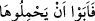

netîcesi ve gayesidir. Çünkü aşk, muhibbiyyet-i sıfâtiyye makamındandır. Bu feyz ve
fenâ ise mahbûbiyyet-i zâtiyye makamındandır. Bu makamda kalbden ‘yeryüzünde
Allâh’ın halîfesi’ çocuğu doğar. İşte emâneti yüklenip taşıyan odur.
Bu üç mertebeden birincisi avam, ikinci havâs, üçüncüsü ise ahassu’l-havâs içindir.
Birincisi ikincisinin yolu, ikincisi de üçüncüsünün yoludur. Bu emânetin sırrını ancak
eve kapıdan giren (usûle riâyet eden) bulur. Emânetin mânâsına dâir müfessirlerin
zikrettikleri bütün vecihler haktır. Ancak bu vecihler genel olarak hep birinci mertebede
olduklarından esas emânetin zarfı ve kabı durumundadır. Emânetin mânâsının özü, ikinci
mertebede; özünün özü ise üçüncü mertebededir. Bütün bu mertebelere hidâyet
Allah’tandır. Bütün isteklere ulaşmak için inâyet yine O’ndandır.
Sonra “gökler, yer ve dağlar”dan murad bizzat bunların kendileri ve ahâlîleridir.
Çünkü emâneti yüklenme işinin insana tahsis edilmesi, insandan başka canlı cansız ne
olursa olsun bütün mevcûdâta emânetin arz/teklif edilmiş olmasını gerektirir. Zikredilen
emânetin yüklenmesi makamında insanın tahsis edilmesi, insanın cisimlerin en
dirençli/dayanıklı, en sebatkâr ve en kuvvetlisi olduğu içindir. Nitekim “Ey
Muhammed, sen olmasaydın felekleri yaratmazdım.”[324] hadîsinde de felekler
cisimlerin en büyüğü oldukları için özel olarak zikredilmiştir. İşte bu sırdan dolayı
Allah Teâlâ akıllılar için kullanılan çoğul vâvı ile “
” buyurmadı.
Eğer “Zikredilen gökler ve diğerleri cansız varlıklardır. Cansız varlıkların da idrâk
ve anlayışı yoktur. Öyleyse emânetin onlara teklif edilmesinin mânâsı nedir?” dersen,
şöyle cevap veririm: Bu konuda ulemânın iki görüşü vardır:
Birinci görüş, bu emâneti teklif etmenin gerçek anlamına haml edilmesidir. Ehl-i
sünnet mezhebine uygun olan da budur. Çünkü Ehl-i sünnet buna benzer âyetleri te’vil
etmez, Mu‘tezile’nin aksine böyle âyetleri hakîkatine/gerçek anlamına haml ederler. Bu
teklif etmenin gerçek anlamda olması takdîrinde de iki yön vardır ki bunlardan biri
diğerinden daha dakîk/incedir:
Birinci yön: Bir çok âyetin delâlet ettiği gibi cansız varlıkların da hakkânî/gerçek bir
hayatları vardır. Allah Teâlâ şöyle buyuruyor: “Görmez misin ki göklerde olanlar ve
yerde olanlar güneş, ay, yıldızlar, dağlar, ağaçlar, hayvanlar ve insanların bir çoğu
Allâh’a secde ediyor.” (el-Hac, 22/18), “Sonra duman hâlinde olan göğe yöneldi
ona ve yer küreye isteyerek veya istemeyerek gelin dedi. İkisi de “isteyerek geldik”
dediler.” (Fussılet, 41/11), “Çünkü taşlardan öylesi var ki Allah korkusuyla
yukardan aşağı yuvarlanır.” (el-Bakara, 2/74) “Onu övgüyle tesbih etmeyen hiçbir
şey yoktur.” (el-İsra, 17/44) “Her biri kendi duâsını ve tesbihini öğrenmiş ve
bilmiştir.” (en-Nûr, 24/41)
Hz. Şeyh-i Ekber (k.s.) der ki: “Akıllıların çoğu, hatta hepsi cansız varlıkların
akletmediğini söylerler. Onlar sadece gözlerinin gördüğüyle durup kalmışlardır. Bize
göre durum öyle değildir. Onlara bir peygamberden veya bir velîden bir taşın onunla
konuştuğu haberi geldiği zaman onlar “Allah Teâlâ o anda o cansız varlıkta ilim ve